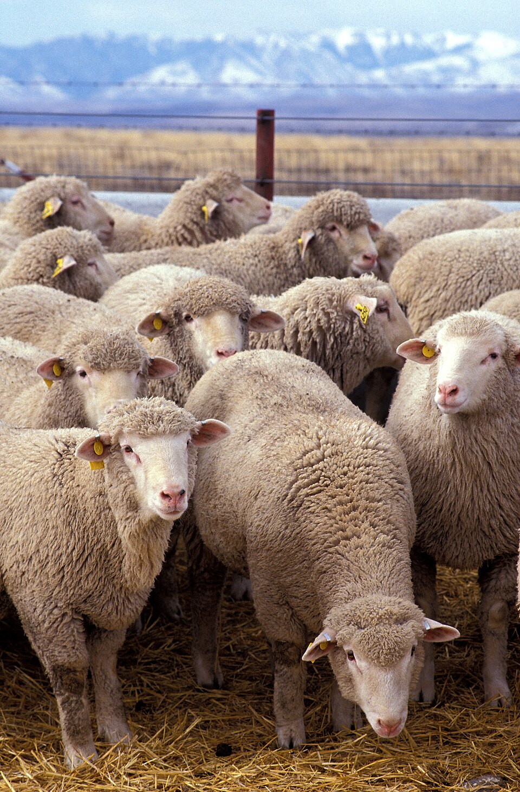

🐄 Sobre as Vacas

As vacas são importantes para a produção de leite e carne. Elas ajudam para a economia rural e fazem parte da vida de muitas famílias no campo.
🐑 Sobre as Ovelhas

As ovelhas fornecem lã, leite e carne. Elas ajudam os produtores rurais e contribui para o desenvolvimento sustentável no campo.
📊 Dados do Campo
Segundo o IBGE, a pecuária é uma atividade importante para a economia brasileira, contribuindo para a produção de alimentos e para o desenvolvimento das áreas rurais.